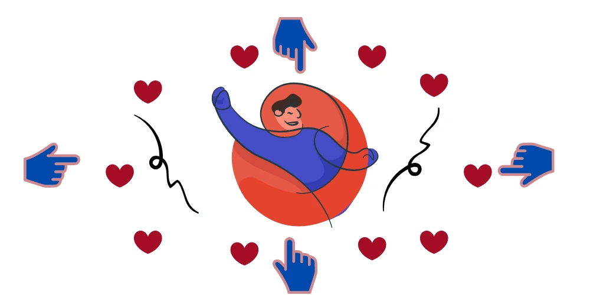

A people pleaser is someone who tries hard to make others happy. They will often go out of their way to please someone, even if it means taking their own valuable time or resources away from them. People pleasers often act the way they do because of their insecurities and lack of self-esteem. They worry about how others will view them when they say no. People don’t want to be seen as lazy, uncaring, selfish or totally egocentric. They fear they’ll be disliked and cut from the group, whether it’s friends, family or co-workers. Take your first steps in getting past pleasing people by reading strategies on how to stop being a people pleaser and how to overcome people-pleasing.

What is a People Pleaser?
A people pleaser is typically someone everyone considers helpful and kind. When you need help with a project or someone to help you study for an exam, they’re more than willing to step up. If you recognize yourself in the above description, you may be a people pleaser. But at some point, constantly making yourself available to others can take an emotional toll. You may find that you neglect your own needs because you fear disappointing others when they ask for your help.
“people pleasers want everyone around them to be happy… and they will do whatever it takes to keep them that way.” Dr Susan Newman
People-pleasers can often be perfectionists, rehearsing what they’re going to say before a phone call, styling their hair meticulously in the mirror, and spending hours browsing the internet for the perfect smartphone that “defines” them. Saying “NO” is the first step you can take to stop being a people pleaser.
“For some, saying ‘yes’ is a habit.” - Dr Newman
Reasons Why You are a People Pleaser
A lack of parental attunement is a big part of what causes people-pleasing. Many times, parents of people pleasers are too worried about their own troubles to tune in to what their children are feeling and thinking. Or they may frequently mislabel or misinterpret their child’s signals and feelings.
First, you need to know why you are a people-pleaser before knowing how to stop being a people pleaser:
- Changing your personality depending on who’s around you
- You fear rejection
- Pretend to agree with everyone
- Apologizing for things that aren’t your fault
- Want others to be nice to you
- Not being able to say NO
- Eventually, you act like the people around you
- You don’t admit when your feelings are hurt
If you find you match any of these characteristics of a people-pleaser, then you may want to take a step back and analyze self-care. Your self-care will help you establish boundaries between yourself and others. You will learn how to say, “NO” and how to take care of yourself and love yourself before others. If you find these changes extremely challenging then I recommend you seek a professional mental health therapist to help you start. Going to therapy alone is a form of self-care and you will be on your way to not only taking care of others but also yourself. This may help you to stop being a people-pleaser.
Why is being a People Pleaser Problem?
People pleasers can be so busy taking care of everyone else, that they forget to take care of themselves. They can identify so strongly with caregiving and agreeing with others that they can lose sight of their own needs, values, and beliefs. Their kindness, willingness to help, and difficulty saying no, can lead to other people taking advantage of them. People-pleasers can become overworked and overburdened, which can lead to them harbouring resentment towards those they are helping. The desire to avoid conflict can cause them to accept bad behaviour from others. Putting aside their own needs can cause them to believe their needs aren’t important. If you identify with the above, there are things you can do to stop being a people-pleaser.
How to Overcome People-Pleasing?
Practice Empathic Assertion to Stop being a People Pleaser
Since it can be hard for a people-pleaser to say no without trying to justify it, practising empathic assertion might be helpful. Some people initially think that being assertive means stepping all over people. However, assertiveness is really about connection. Empathy is the ability to understand another person’s feelings from their point of view. When you put the two together, you can respond in a way that acknowledges the other person’s situation or feelings, followed by a statement in which you stand up for yourself and what you need. Practising empathic assertion might be really useful when you try to stop being a people pleaser.
Keep a Confidence File to Stop being a People Pleaser
Since a lack of confidence can cause your people-pleasing ways, keep a file with positive and praising emails, cards or anything else. It’s one of the proven ways to stop being a people pleaser. It can even come in handy when asking for that raise. Print out any emails or letters of praise you’ve received from co-workers or higher-ups and taking them to your boss as another reason why you deserve a raise.
Practice Self-care to Overcome People Pleasing
Once you know yourself and your needs, you can start practising self-care. Self-care is about giving yourself the things that help you feel refreshed, calm, and energized so you can thrive. This includes eating healthy meals, exercising, engaging in activities that you enjoy, and spending time with friends and family. It can also include meditation, mindfulness, practising gratitude, getting your hair and nails done, and taking a relaxing bath. Self-care is not selfish. In fact, when you take good care of yourself, you have more to give to others.
Practice Successive Approximation to Overcome People Pleasing
Successive approximation means taking “one step in the direction you want to go” and rewarding yourself for getting that far. If your neighbour’s dog’s barking is driving you crazy, make efforts to confront the person by first saying “Good morning,” as you’re both leaving the house, she said. Another time, you might mention how noisy the neighbourhood has been. If he doesn’t get the hint, you can knock on his door and use an empathic assertion.
It can help to write down “how you get from A to Z”. This also helps you gain the courage to confront the person.
Don’t Apologize when it’s Not Your Fault
People-pleasers tend to be serial apologists. Pay attention to when you’re apologizing and consider if you’re really at fault. Ask yourself if you’re responsible for the situation. Usually, the answer is no. You as a person are entitled to your time and you need to rest and rejuvenate to be there for the people you want to help out. Look at saying no as an opportunity to spend your time doing what you value in your life.
Learn to Say NO to Overcome People Pleasing
People-pleasers have trouble saying no. When you always say yes, you can become easily become overwhelmed. This can lead to feeling anxious and building resentment against the people you are helping. Saying no some of the time can keep this from happening. You don’t need to give a lengthy explanation as to why you are saying no. Keep it short and matter of fact. Start by saying no to small requests. Try not to volunteer your time, energy, and help automatically. If you have two people ask you for something, say yes to only one of the requests. Saying no to some of the things that you really don’t want to do enables you to devote your all to the things that are important to you. When you are able to say no, your yeses become more meaningful as well.
Establish Healthy Boundaries to Stop being a People Pleaser
Establishing clear, healthy boundaries can keep you from feeling used by others. When you have healthy boundaries with both yourself and others, you will feel stronger as an individual, and your relationships will strengthen. People-pleasers often put the needs of others before their own, which can cause them to feel a lot of resentment. When healthy boundaries are established, you will be less likely to build resentment. For instance, if your friend always calls you to talk about her problems at dinner time, and your dinner gets cold, you might harbour resentment about this. Instead, you could establish a boundary. You can let her know that you won’t be answering the phone at dinner time and will only be able to talk to her after you are done eating. Once you establish a boundary, you need to make sure you abide by it as well.
Self-talk Yourself Up to Stop being a People Pleaser
Positive self-talk ain’t easy, but if you practise for a while and get better at it, it will work a charm in boosting your self-confidence. You’d be surprised how much of a difference a bit of self-love can make. Using positive self-talk is like being a good mother to yourself. You can use this to remind yourself of your priorities and boundaries. For instance, you might say “I can do this,” “I have the right to park in this parking spot,” “I made the decision that’s right for me” or “My values are more important than saying yes in this situation.”
Realize that You Can’t be Everything to Everyone
Again, people-pleasers want to make everyone happy. While you might make someone happy temporarily, it doesn’t work long term. And you can get hurt in the process. People who preserve their time and energy and don’t say yes to everyone also realize that they can’t make other people happy. People-pleasers must realize that the only thoughts and feelings they can change are their own.
Curiosity before Commitment
Great negotiators are curious. Ask more questions and learn about the situation.
Try to learn the following:
- What do they want?
- Why do they want it?
- What is the timeline?
- What exactly do they want you to do?
- Are you their only option?
- How else can they meet their needs?
After you ask these questions you say, “Let me think about it and get back to you.” This will allow you to distance yourself from the situation to avoid feeling the immediate emotional pressure as a people-pleaser to say yes. Taking the time to gather information will also make it more likely for you to make an informed decision. Asking a friend or colleague for their perspective as you consider your options will also help you in the decision making process. They might be in a better position to see whether or not you’re doing the right things for the right reasons. It’s often easier to see people-pleasing in others than it is to see it in yourself.
Information gathering, decision making, and responding are three distinct steps in the process to stop being a people pleaser. You’re more likely to slip into people-pleasing when you try to do both at once.
Effects of Being a People Pleaser
If you’re in a constant people-pleaser mode, you can lose sight of who you are. You may have no idea of what truly makes you happy. People pleasers may spend so much time trying to please others that they don’t know what to do with themselves if there’s no one asking them for something. Knowing the effects of being a people pleaser might be helpful to stop being a people pleaser and to overcome people-pleasing Constant people-pleasing behaviour can lead to:
Lack of self-care
Constantly devoting yourself to meeting the needs of others can cause you to neglect your own. You may find yourself getting sick or mentally burned out from the pressure of trying to please everyone.
Built-up Resentment
You may find yourself bottling up anger because you feel that people take advantage of you. That can lead you to make passive-aggressive comments and show other signs of your frustration. You may start pulling away from people instead of letting them know what’s going on and working to improve the situation.
Inability to Enjoy Yourself
The stress from constant people-pleasing can make it hard to enjoy simple pleasures like going out for ice cream or watching your favourite TV show. Committing yourself to a lot of different things can make it hard for you to wind down and relax because of the constant stress.
Take a step back and look at where you’re spending most of your time and energy. Keep track of how often you say yes when someone asks you for something. Think about how you feel in those moments. Taking stock of the times you’re unable to give a firm “No” can help you recognize those situations in the future and give a different response. Look for patterns in your people-pleaser behaviour, as this may help you in taking steps to stop being a people pleaser. There may be people that you feel more of a compulsion to try and satisfy. Your actions may be a way to recover from the hurt they caused you in the past.
Start recognizing your limits and placing boundaries around how you spend your time. Think about how much bandwidth you really have before making commitments. Try to expend your energy only on those things that align with your values and make you feel good. Get started overcoming People-pleasing behaviour today by reaching out to us. Our friendly team of Psychiatrists and Psychologists are here to help your journey on overcoming people-pleasing.